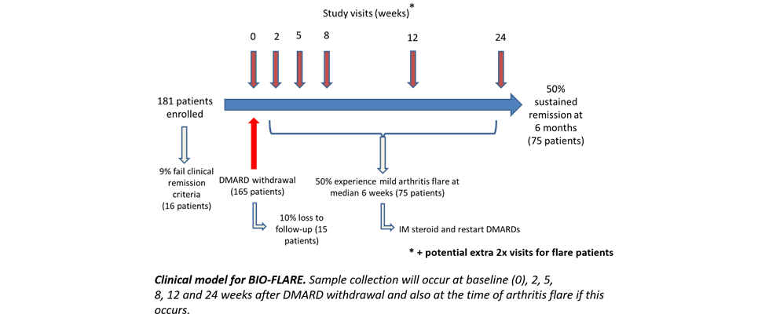

Newcastle University
investigating flare in Rheumatoid Arthritis.
BIO-FLARE stands for Biological Factors that Limit Sustained Remission in Rheumatoid Arthritis. BIO-FLARE is a research study that has been set up between Newcastle University, the University of Birmingham and the University of Glasgow. It aims to find out more about what happens in flare in rheumatoid arthritis.
BIO-FLARE stands for Biological Factors that Limit Sustained Remission in Rheumatoid Arthritis. BIO-FLARE is a research study that has been set up between Newcastle University, the University of Birmingham and the University of Glasgow. It aims to find out more about what happens in flare in rheumatoid arthritis.
BIO-FLARE is a research study that aims to find out more about flare in rheumatoid arthritis. If more is known about what triggers flare in RA, then more can be done to try and prevent it, and to identify which patients are more prone to flare than others. We also hope to identify which patients would be at a lower risk of flaring if they were to stop their medications.
Rheumatoid arthritis is characterised by periods of inactivity, where the disease is relatively well controlled, and periods of flare, when the disease is very active and many joints are painful. This can be very unpredictable and frustrating for patients as they cannot predict how they will feel from day to day and week to week.
Patients with RA that is stable and in remission (i.e. they have no or barely detectable levels of disease) will have their disease modifying anti-rheumatic drugs (DMARDs) stopped. They will be followed up very closely for 6 months. We know from previous work that about half of them will stay in remission. The other half will go on to have a mild flare and they will have their drugs restarted and maybe require some short term steroid treatment. By following these patients up very closely and taking blood samples at regular intervals we hope to identify certain markers in the blood that signify which patients will flare. We will also take a sample of the lining of the joint (a synovial biopsy) at the point of flare, which will help us to work out what is going on in a flare of rheumatoid arthritis.
Patients with rheumatoid arthritis that is stable and in remission who wish to be involved in the study will be identified by their rheumatology team. They will be invited to discuss the study with a member of the research team who will give them more information and answer their questions. The study is run from 3 centres in the UK – Newcastle, Birmingham and Glasgow.
The BIO-FLARE project is a collaboration between Newcastle, Glasgow and Birmingham Universities. The universities have complementary expertise in different areas of rheumatoid arthritis pathophysiology, and this will allow us to gain a comprehensive understanding of all the factors – immune, stromal and epigenetic - that contribute to development of flare.
BIO-FLARE stands for Biological Factors that Limit Sustained Remission in Rheumatoid Arthritis. It is a non-randomised longitudinal cohort study looking into the pathogenesis of flare in rheumatoid arthritis. It is a multi-centre study designed in a Hub-and-Spoke model. There are three regional hubs (Newcastle, Birmingham and Glasgow), each of which will be associated with spoke research sites located at local NHS Trusts.
BIO-FLARE stands for Biological Factors that Limit Sustained Remission in Rheumatoid Arthritis. It is a non-randomised longitudinal cohort study looking into the pathogenesis of flare in rheumatoid arthritis. It is a multi-centre study designed in a Hub-and-Spoke model. There are three regional hubs (Newcastle, Birmingham and Glasgow), each of which will be associated with spoke research sites located at local NHS Trusts.
The participant population is patients with established rheumatoid arthritis in clinical remission and receiving non-biologic disease-modifying anti-rheumatic drugs (DMARDs). Participants will have their DMARDs stopped and be followed up for 6 months with blood samples at regular intervals. We know from previous work and the published literature that about half of these participants will flare. We will take an ultrasound-guided synovial biopsy at the point of flare (and there is also an option for a synovial biopsy at baseline). We aim to recruit 181 patients over the 3 sites.
The primary objective is to study the immune dysregulation preceding rheumatoid arthritis flare. We will focus on the following workstreams to interrogate the biology of flare:
An overview of the study sampling is shown below
Rheumatoid arthritis (or RA for short) is a chronic autoimmune disease that generally affects the joints and can affect multiple systems in the body. Autoimmune diseases happen when the body’s immune system, which is there to fight infection, starts thinking that its own cells are foreign and attacking or destroying them. In RA this results in pain, swelling and stiffness in the joints and in the long term, can lead to destruction of the joints and long-term disability.
BIOFLARE is a multi-site study involving several institutes and private companies, such as Newcastle University, Glasgow University, and Birmingham University:
The leads on different aspects of the clinical trial can be seen below
Please use the below form to give us feedback or to ask any questions.


{kind=link}
{kind=link}